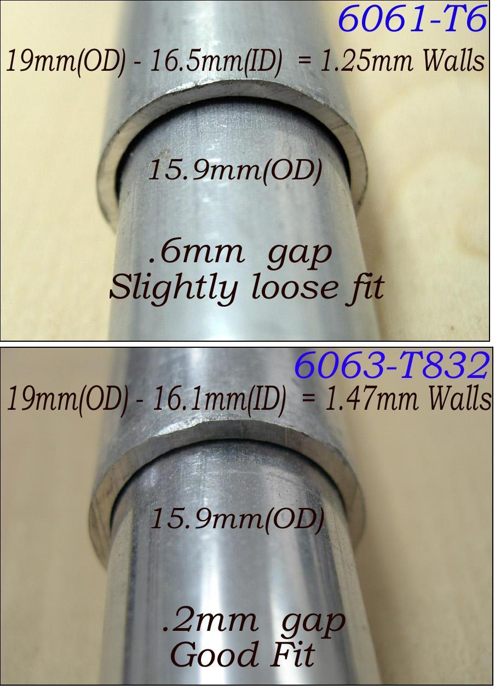

| Aluminum Stringers - Metric | Menu Last Page Next Page |
|  |
Metric Tubing
Some metric users are finding it difficult to achieve the .2mm to .5mm gaps that are required for a "sliding fit". In most cases, metric sizes offer either 0mm or 1mm gaps which are either too tight or too loose. Some builders have taken to using a lathe to reduce insert diameter to produce a .2mm gap. In the pic, tubing has been converted from Imperial to metric to show the acceptable gap range.
.750in. tubing = 19mm
.049wall = 1.25mm |